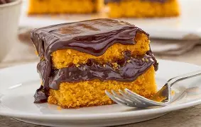

Bolo de cenoura
Ingredientes:
3 cenouras médias
4 ovos
1 xícara de óleo
2 xícaras de açúcar
2 xícaras de farinha de trigo
1 colher de sopa de fermento em pó
Modo de Preparo:
No liquidificador, adicione as cenouras, os ovos e o óleo, e bata até obter uma mistura homogênea.
Em uma tigela, misture a farinha de trigo e o açúcar, depois adicione a mistura do liquidificador e misture
bem. Por último, acrescente o fermento e misture delicadamente.
Despeje a massa em uma forma untada e leve ao forno pré-aquecido a 180°C por cerca de 40 minutos ou até que
um palito saia limpo.
Cobertura (opcional): Para uma cobertura de chocolate, derreta 200g de chocolate meio amargo com 1/2 xícara de creme de leite e despeje sobre o bolo após esfriar.